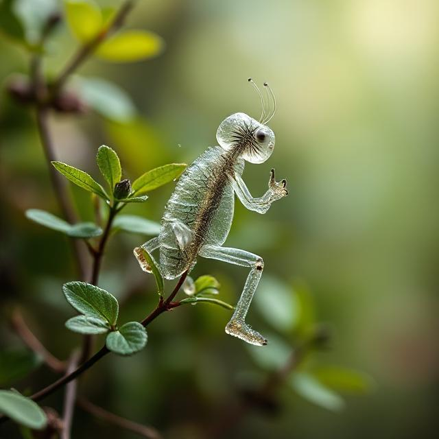

Vlastnosti živých soustav
Živé soustavy představují složité systémy, jejichž fungování je úzce spjato s chemickými procesy. Tyto procesy probíhají na základě chemických prvků a sloučenin, které tvoří strukturu organismů a umožňují jim růst, výměnu látek i reakci na podněty. Více o klíčových vlastnostech živých soustav se dozvíte po kliknutí níže.
Zobrazit vlastnosti živých soustavVznik života na Zemi
Existuje nespočet teorií o vzniku života na Zemi. Zajímá vás toto téma? Zde se o něm můžete dozvědět více:
Teorie vzniku života